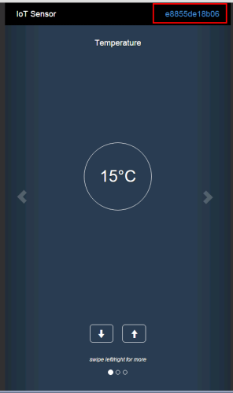

IBMStreams com.ibm.streamsx.iotf Toolkit > com.ibm.streamsx.iotf 0.6.0.commit_bdde1ec > com.ibm.streamsx.iotf.quickstart
Access device events for the IBM Watson IoT Platform Quickstart service.
Quickstart allows you to experiment without having to register. This namespace contains an operator QuickstartDeviceEvents and an application Quickstart to interact with a single Quickstart device. Thus you can see IBM Watson IoT Platform and IBM Streams integrated concept without having to set up an IoTF service.
Follow the instructions at https://developer.ibm.com/recipes/tutorials/use-the-simulated-device-to-experience-the-iot-foundation/ to use the simulator.
Compile the Quickstart application sc -M com.ibm.streamsx.iotf.quickstart::Quickstart
Submit the Streams application bundle (.sab file) to an IBM Streams instance or your Bluemix Streaming Analytics Service setting the submission value deviceId to the device id of the simulator. The device id is at the top right of the simulator.
